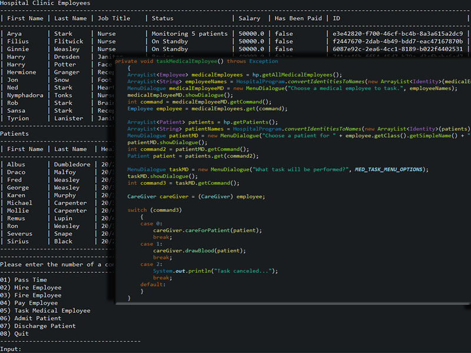
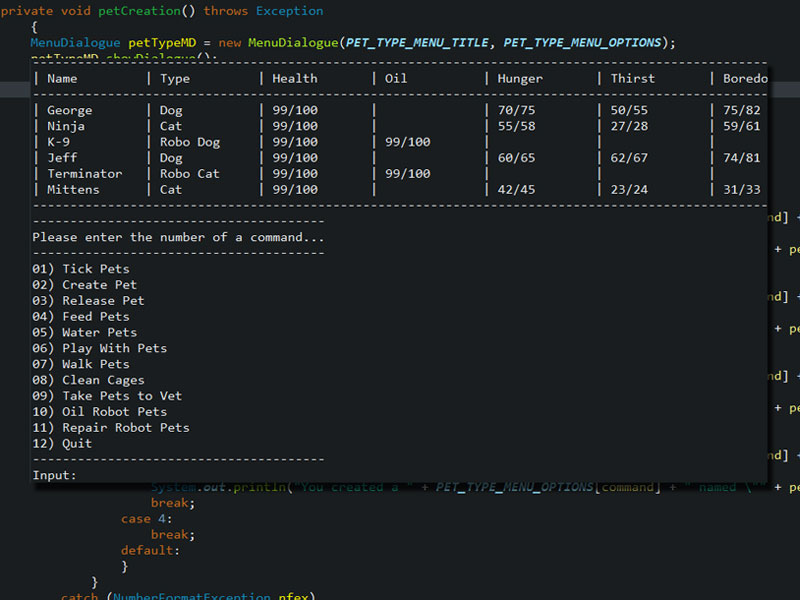
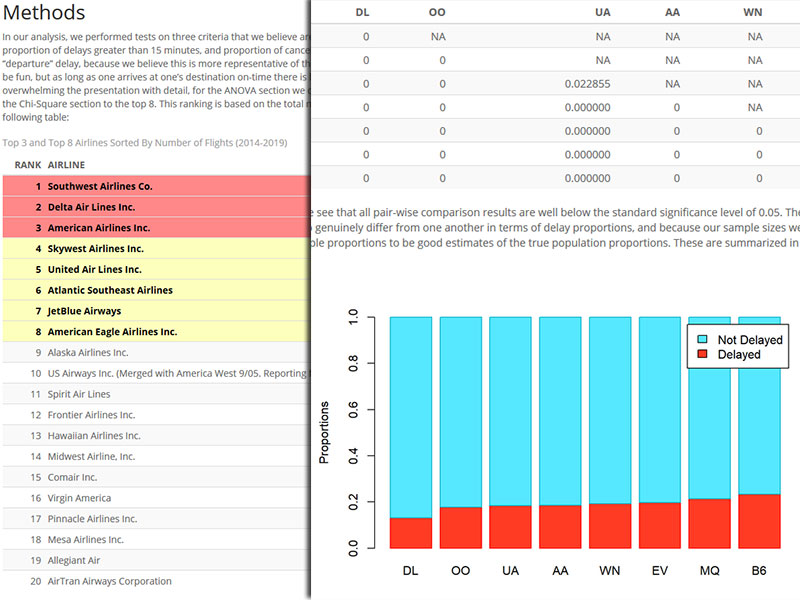

University Hospital Clinic

A simple command-line program that simulates managing and
interacting with employees and patients in a hospital
setting, including actions like “hire”, “fire”, “pay
salary”, and “draw blood”.
Virtual Pet

A command-line simulation for managing a “shelter” of
virtual pets. The virtual pets come in various types and
have different preferences and internal values that affect
things like “health”, “hunger”, and “boredom”.
Airline On-Time Performance

An R Markdown report analyzing international flight
cancellations and delays using a custom-built database with
data from the Bureau of Transportation Statistics. Utilized
statistical techniques like ANOVA and post-hoc error
correction.